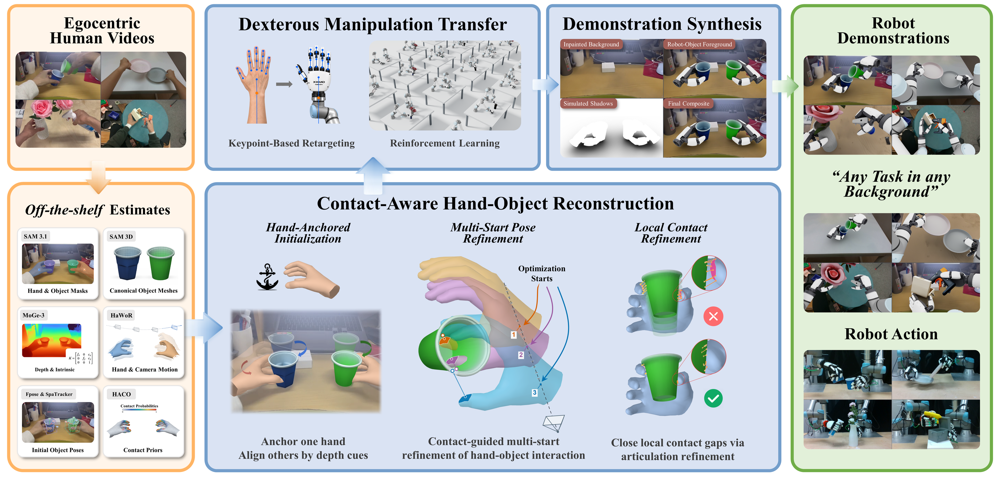

01
Contact-aware reconstruction
Hand-anchored initialization establishes relative geometry. Multi-start pose refinement and local contact refinement improve the hand–object interaction.
Human hand + object trajectories
Research project
Human demonstrations. Executable robot motion.
Visual observations that preserve the interaction.

End-to-end success in simulation
34 of 62 evaluated demonstrationsSuccess of the strongest baseline
54.84% vs. 14.52% · Paper, Table 1Sources of human demonstrations
TACO · OakInk2 · Self-collected01 / Video to robot
Follow a human demonstration through a successful simulation rollout to robot observations in the original scene.
Pouring between cupsSelf-collected
Tail-aligned excerpts of the same task; human and robot motions are not framewise identical.
Some tasks use floating-hand renderings because the dual-arm versions obscure too much of the hand–object interaction.
02 / The data engine
EgoMatrix starts from monocular RGB. Its goal is manipulation-relevant hand–object geometry and paired robot data.

Hand-anchored initialization establishes relative geometry. Multi-start pose refinement and local contact refinement improve the hand–object interaction.
Keypoint retargeting and reinforcement learning turn the reconstructed interaction into a successful bimanual execution in IsaacLab.
Robot hands and objects are rendered jointly from the recorded execution, then composited into real scenes with simulated shadows.
03 / End-to-end results
The same simulation transfer protocol evaluates whether reconstructed interactions can become executable robot demonstrations.
| Method | Success rate | Successful / evaluated |
|---|---|---|
| DexImit* | 12.90% | 8 / 62 |
| Do As I Do | 14.52% | 9 / 62 |
| EgoMatrix | 54.84% | 34 / 62 |
*DexImit receives half credit when only one of the two hand–object trajectories satisfies the success criterion. These are simulation transfer results, not hardware success rates.
04 / Why contact matters
Visually plausible hand poses alone are not enough. Gaps, misplaced contact, and interpenetration can prevent a robot from reproducing the manipulation.
Each refinement stage improves end-to-end success on TACO. The reconstruction also ranks best on 8 of 10 metrics on TACO and 6 of 10 on OakInk2.
Reported in the paper, Tables 2 and 4.
TACO trajectory-transfer success · higher is better
The same transfer protocol is used across refinement stages.
View the bottle-uncapping contact comparison →. Enable JavaScript to explore all reconstruction comparisons.
05 / Background transfer
Explore five source tasks across five target backgrounds. Robot–object motion is preserved while the viewpoint and scene change.
Select any cell to play its video. Outlined cells retain the source background.
The recorded interaction is rendered in its original background.
Background transfer assumes a compatible support surface and does not re-simulate dynamics against arbitrary target geometry. The Oak source row uses the floating-hand version to keep the interaction visible.
From open videos to your workstation
Convert manipulation tasks from open datasets into robot data in a target workstation, helping reduce the need for teleoperated data collection during post-training.
Pouring between plates. This example uses a self-collected human demonstration. Its synthesized observation is shown alongside a separately recorded replay in the same workstation. The clips retain their native timing and are not framewise synchronized.
06 / Beyond simulation
Six task replays on physical dual-arm robots with XHand dexterous hands.
Recorded replay from an already grasped state through the pouring pose.
Bimanual motion for pouring from one plate into the other.
Tool–container interaction transferred from a public egocentric demonstration.
A table-tennis serve transferred to the dual-arm robot.
A spray-bottle interaction with the flower vase held by the other hand.
Transferred glue-gun motion alongside a held box.
Videos show the recorded replay segments. Simulation arm visualizations and physical hardware recordings are presented separately.
EgoMatrix